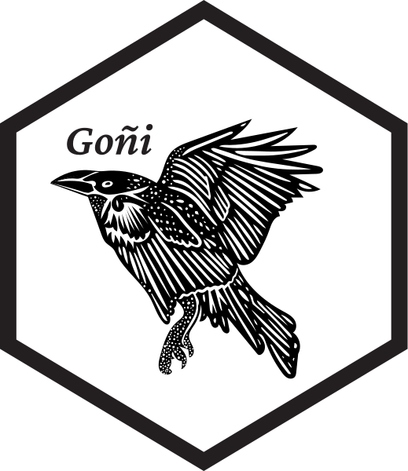
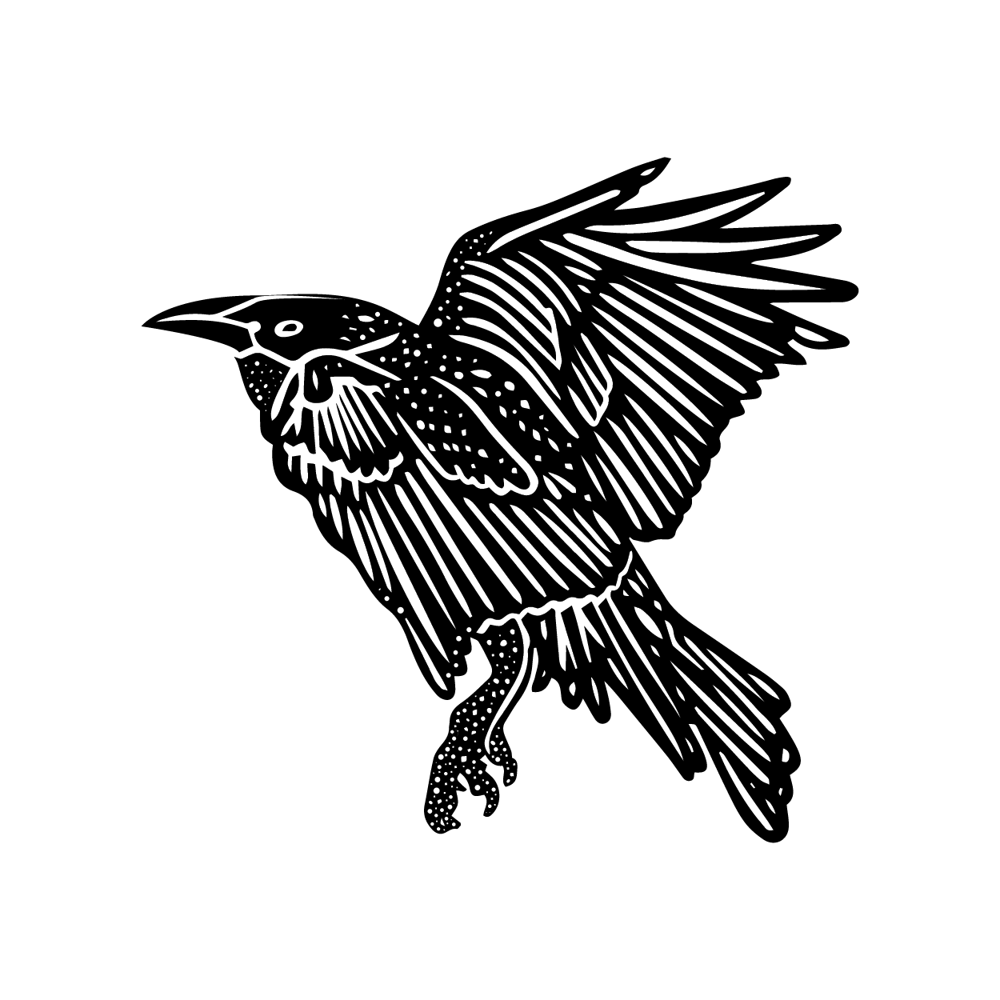

Personal brand

El logo de esta página fue diseñado por Mónica Umaña, fundadora de Musaline Studio.
Pero esto no es solo un logo, sino que es una representación que busca unir mis dos pasiones académicas: la ingeniería y la estadística. Está inspirado en los hex stickers que son una tradición dentro de la comunidad de , principalmente por influencia del tidyverse, como detalla Hadley Wickham en este artículo. Como supongo que se sospecha, es mi herramienta predilecta para el desarrollo de mis actividades académicas.
Por otro lado, Goñi es mi segundo apellido y tradicionalmente a todos en nuestra familia se nos conoce por el mismo. Aun cuando llegue a lugares nuevos, poco a poco adoptan la costumbre de llamarnos Goñi, por lo que era esencial que formara parte de mi imagen personal.
Con esa identidad en mente, el logo incorpora un símbolo que representa cómo pienso y trabajo: al cuervo (de la familia córvidos). Es un símbolo de la curiosidad y creatividad; observan, prueban y corrigen; en este sentido funcionan como ingenieros e ingenieras, ya que recogen información, elaboran estrategias y buscan mejores resultados; por ejemplo:
Los cuervos de Nueva Caledonia (Corvus moneduloides) fabrican y ajustan herramientas para extraer alimento. Experimentos clásicos de Gavin R. Hunt y colaboradores muestran modificación y transporte de herramientas, lo que implica planificación. https://doi.org/10.1038/379249a0
Trabajos de Alex Taylor y colaboradores muestran que los cuervos infieren relaciones causales simples, distinguen pruebas exitosas de fallidas y ajustan el comportamiento en consecuencia. https://doi.org/10.1073/pnas.1208724109
Estudios sobre córvidos en ambientes urbanos muestran estrategias de minimización de esfuerzo, por ejemplo, investigaciones en Japón sobre cuervos que utilizan el tráfico para romper nueces. https://doi.org/10.3838/jjo.68.43
De esta manera, este logo representa una forma de creatividad que no se limita a imaginar, sino que experimenta y aprende. La ingeniería industrial y la estadística buscan exactamente eso: entender los datos, modelar fenómenos, iterar soluciones y optimizar recursos. El cuervo encarna ese mismo método: medir el mundo, reducir la incertidumbre y mejorar procesos.
Además, me encanta Edgar Allan Poe.
